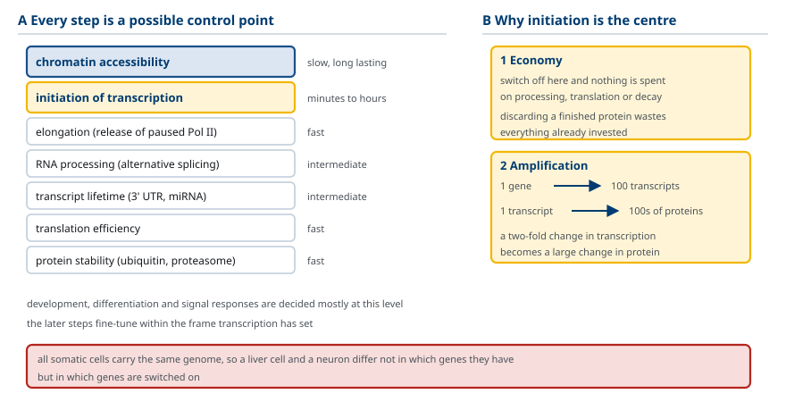
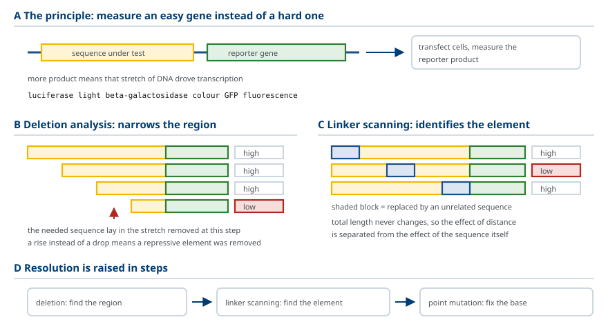
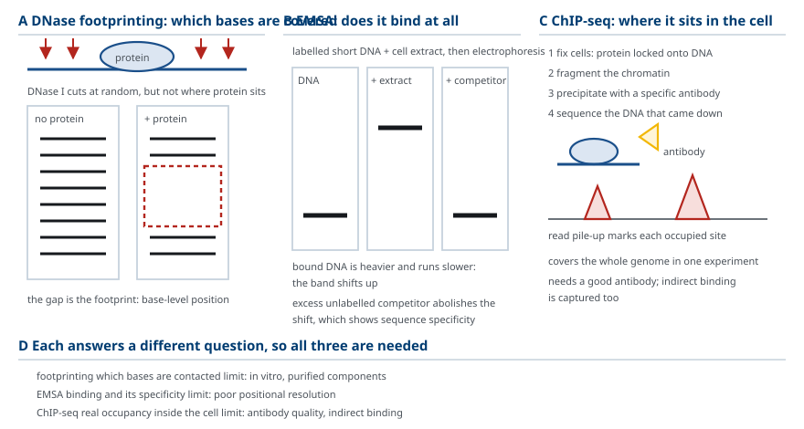
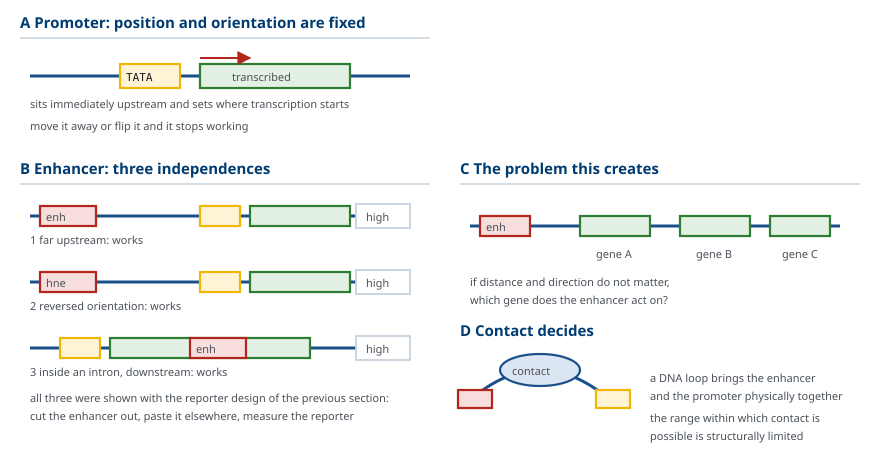
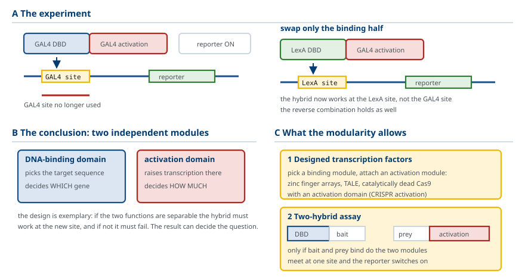
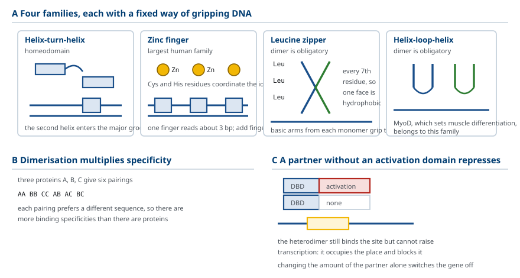
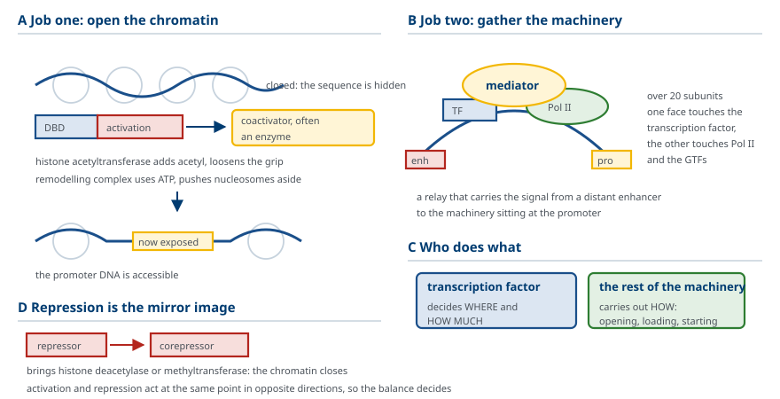
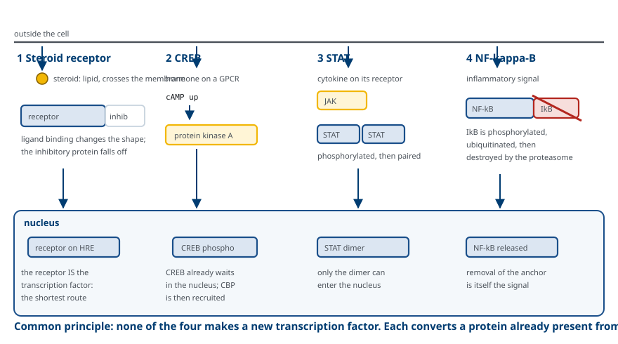
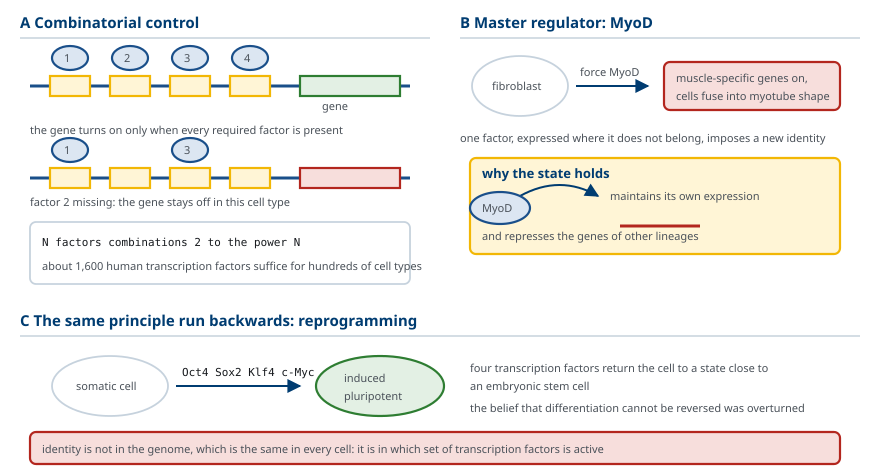
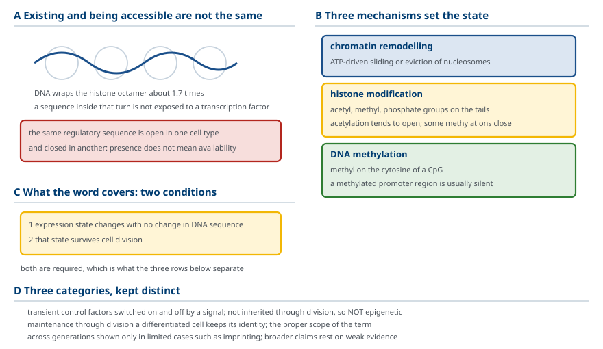

M01-W07-L02 · 인체일반생물학과 기초세포생물학
전사 조절과 후성유전
Transcriptional Regulation and Epigenetics
학습목표
- 유전자 발현을 바꿀 수 있는 단계를 모두 열거하고 전사 단계가 조절의 중심이 되는 이유를 설명한다.
- Reporter gene 분석의 원리를 쓰고 결실 분석과 linker scanning이 각각 답하는 질문을 구분한다.
- DNase footprinting, EMSA, ChIP-seq가 각각 무엇을 보여주는지 구분하고 세 방법을 함께 쓰는 이유를 설명한다.
- Promoter와 enhancer를 실험적 기준으로 정의하고 enhancer의 위치·방향 독립성을 설명한다.
- 영역 교환 실험의 설계와 결과를 쓰고 전사인자가 모듈 구조라는 결론이 어떻게 도출되는지 설명한다.
- DNA 결합 도메인의 네 가지 구조 계열을 쓰고 이량체 형성이 결합 특이성에 미치는 영향을 설명한다.
- 활성화 영역이 수행하는 두 가지 일을 쓰고 공동활성화인자와 mediator의 역할을 구분한다.
- 세포 외 신호가 promoter에 도달하는 네 경로를 전사인자의 대기 장소와 활성화 방식으로 구분한다.
- Master regulator의 개념을 쓰고 조합 조절과 함께 조직 특이적 발현을 설명한다.
- 후성유전 조절이 전사 조절에 더하는 층이 무엇인지 쓰고 그 범위를 정의한다.
선수지식
- M01-W07-L01 RNA 합성과 가공 — Pol II, general transcription factor, preinitiation complex
- M01-W06-L02 유전자와 유전체의 구성 — promoter, 조절서열, 염색질의 기본 구조
- M01-W06-L01 재조합 DNA와 분자생물학 실험 기법 — 클로닝, 형질도입, 전기영동
1. 들어가며: 같은 유전체로 다른 세포가 되는 일
이 수업의 질문은 하나다. 모든 세포가 같은 DNA를 갖는데 왜 서로 다른 세포가 되는가. 답은 간단히 말하면 켜진 유전자가 다르기 때문이고, 이 수업은 그 "켜고 끄는" 일이 실제로 어떻게 이루어지는지를 다룬다.
규모를 숫자로 잡아 두자. 사람의 유전자는 약 2만 개인데, 한 종류의 세포에서 동시에 켜져 있는 것은 그 가운데 일부다. 나머지는 꺼져 있다. 그래서 세포의 정체성은 유전체가 아니라 발현 양상으로 정해진다. 간세포를 간세포로 만드는 것은 간에만 있는 유전자가 아니라, 간에서만 켜지는 유전자의 조합이다.
여기서 기본 틀을 세워 두자. 유전자가 발현되어 단백질이 되기까지는 여러 단계가 있고, 원칙적으로 어느 단계에서든 조절할 수 있다. 전사를 할지, 만든 RNA를 어떻게 가공할지, 핵 밖으로 보낼지, 번역할지, 만든 단백질을 얼마나 오래 둘지가 모두 조절 지점이다. 그런데 가장 큰 몫은 전사 단계에서 조절된다. 이유는 경제적이다. 만들지 않는 것이 만들고 버리는 것보다 싸다.
용어 다섯 개를 먼저 정의한다.
- 전사인자(transcription factor): 특정 DNA 서열에 붙어 그 유전자의 전사를 늘리거나 줄이는 단백질이다. 조절의 주된 행위자다.
- promoter: 전사가 시작되는 자리와 그 부근이다. 전사 기구가 여기에 모인다.
- enhancer: promoter에서 멀리 떨어져 있어도 그 유전자의 전사를 올리는 서열이다. 거리와 방향에 비교적 자유롭다는 점이 특징이다.
- 후성유전(epigenetic) 변화: DNA 서열을 바꾸지 않으면서 발현 상태를 바꾸고 그 상태가 세포 분열 뒤에도 유지되는 변화다. DNA 메틸화와 histone 수식이 그 수단이다.
- 접근성: DNA가 nucleosome에 감겨 있어 전사인자가 붙을 수 없는 상태와, 풀려 붙을 수 있는 상태의 차이다. 조절을 결합의 유무가 아니라 접근의 가능성으로 보는 관점이 이 수업의 핵심이다.
절은 다음 순서로 쌓인다. 먼저 어느 단계에서 조절이 일어나는지를 정리하고(2절), 전사 조절의 구성 요소를 본다(3·4·5절). 이어서 chromatin 쪽의 조절(6·7절)과 DNA 메틸화(8절)를 다루고, 그 상태가 어떻게 유지되고 전달되는지(9·10절), 그리고 발생과 질환에서 어떻게 나타나는지(11·12절)를 본다.
2. 조절은 주로 어느 단계에서 일어나는가
사람의 모든 체세포는 같은 유전체를 가진다. 그런데 간세포와 신경세포는 완전히 다르다. 차이를 만드는 것은 유전자의 유무가 아니라 어떤 유전자가 켜져 있는지다.
발현을 바꿀 수 있는 단계는 많다. 순서대로 보면 다음과 같다.
| 단계 | 조절 수단 | 반응 속도 |
|---|---|---|
| 염색질 접근성 | nucleosome 배치, histone 변형, DNA methylation | 느림, 오래 유지 |
| 전사 개시 | 전사인자, 공동활성화인자, mediator | 분~시간 |
| 전사 신장 | Pol II 일시정지의 해제 | 빠름 |
| RNA 가공 | 대체 splicing, 3′ 말단 선택 | 중간 |
| 전사체 수명 | 3′ UTR 결합 단백질, miRNA | 중간 |
| 번역 효율 | 개시인자의 인산화, 5′ UTR 구조 | 빠름 |
| 단백질 안정성 | ubiquitin화와 proteasome 분해 | 빠름 |
이 가운데 전사 개시가 조절의 중심이다. 이유는 두 가지다.
경제성. 전사 단계에서 끄면 그 뒤의 모든 과정에 자원이 들지 않는다. 가공·번역·분해까지 다 한 뒤에 없애는 것은 낭비다.
증폭. 전사체 하나에서 단백질 수백 개가 나오므로, 전사량의 작은 차이가 단백질량의 큰 차이로 증폭된다.
따라서 발달과 분화, 신호 반응의 대부분은 전사 수준에서 결정된다. 나머지 단계는 전사가 정한 큰 틀 안에서 미세 조정을 한다.

3. 조절서열을 어떻게 찾는가 — reporter gene 분석
"이 유전자의 발현을 정하는 DNA 구간은 어디인가"라는 질문에 답하는 방법을 먼저 익혀야 한다. 기전보다 방법을 먼저 보는 이유는, 이 분야의 개념 대부분이 특정 실험의 결과로 정의되었기 때문이다.
원리. 발현을 측정하기 어려운 유전자 대신, 측정하기 쉬운 유전자를 붙인다. 조사하려는 DNA 구간을 클로닝해 그 뒤에 reporter gene을 연결하고, 세포에 넣어 reporter의 산물을 측정한다. 산물이 많으면 그 구간이 전사를 촉진한 것이다.
Reporter로는 측정이 간단한 것을 쓴다. luciferase는 발광량으로, β-galactosidase는 발색으로, GFP는 형광으로 측정한다.
이 틀 위에서 두 가지 설계가 서로 다른 질문에 답한다.
결실 분석(deletion analysis). 조사 구간의 5′ 쪽을 점점 잘라 내면서 발현을 측정한다. 어느 지점을 자른 순간 발현이 떨어지면, 잘려 나간 구간 안에 필요한 서열이 있다. 반대로 자른 뒤 발현이 올라가면 그 구간에 억제 서열이 있었다는 뜻이다. 이 방법은 대략의 위치를 좁힌다.
Linker scanning. 전체 길이는 유지하고, 짧은 구간씩 차례로 무관한 서열로 바꿔치기한다. 어느 구간을 바꿨을 때 발현이 떨어지면 그 구간이 필요한 서열이다. 길이가 변하지 않으므로 길이 변화의 영향과 서열 자체의 영향을 분리할 수 있다. 결실 분석보다 해상도가 높다.
더 좁히려면 부위 특이적 돌연변이(site-directed mutagenesis) 로 몇 개의 염기만 바꿔 본다. 이 단계에서 개별 염기의 기여를 알 수 있다.

4. 단백질이 DNA의 어디에 붙는지 보는 방법
Reporter 분석은 어느 구간이 필요한가를 알려주지만 무엇이 거기 붙는가는 알려주지 않는다. 결합을 직접 보는 방법이 따로 있다.
DNase footprinting. DNA 조각을 표지하고 DNase I로 무작위 절단한다. 단백질이 붙어 있던 구간은 효소가 접근하지 못하므로 자리지 않는다. 전기영동에서 그 구간에 해당하는 띠가 빠져 있는 것으로 나타난다. 빈 자리가 발자국처럼 보이므로 footprint라 부른다. 이 방법은 결합 위치를 염기 수준으로 알려준다.
EMSA(electrophoretic mobility shift assay). 표지한 짧은 DNA에 단백질 추출물을 섞고 전기영동한다. 단백질이 붙은 DNA는 무거워져 느리게 이동하므로 띠의 위치가 이동(shift) 한다. 경쟁 DNA를 넣어 띠가 사라지는지 보면 결합의 서열 특이성을 확인할 수 있다. 이 방법은 결합이 일어나는지 여부와 특이성을 본다.
ChIP(chromatin immunoprecipitation). 앞의 두 방법은 시험관 안의 결합을 본다. 살아 있는 세포에서 실제로 붙어 있는지는 다른 문제다. ChIP는 세포를 고정해 단백질과 DNA를 결합된 상태로 묶고, 염색질을 조각 내고, 그 단백질에 대한 항체로 침전시킨 뒤 함께 붙어 나온 DNA를 분석한다. 염기서열 분석과 결합하면 ChIP-seq가 되고, 유전체 전체에서 그 단백질이 붙는 위치를 한 번에 얻는다.
세 방법을 함께 쓰는 이유는 각각이 다른 질문에 답하기 때문이다.
| 방법 | 답하는 질문 | 한계 |
|---|---|---|
| DNase footprinting | 어느 염기에 붙는가 | 시험관 조건, 정제된 성분 |
| EMSA | 붙는가, 서열 특이적인가 | 위치 해상도 낮음 |
| ChIP-seq | 세포 안에서 실제로 어디에 붙어 있는가 | 좋은 항체가 필요, 간접 결합 포함 |

5. Promoter와 enhancer — 실험이 정한 구분
앞 절의 방법으로 조절서열을 조사한 결과 두 종류가 드러났다. 구분의 기준이 실험적이라는 점이 중요하다.
Promoter. 전사 시작점 바로 앞에 있고, 전사가 시작되는 자리를 정한다. 위치와 방향이 고정되어 있다. 전사 시작점에서 떼어 놓거나 방향을 뒤집으면 기능하지 않는다. TATA box와 그 주변의 core promoter 요소, 그리고 그보다 약간 상류에 있는 인접 조절서열이 여기에 속한다.
Enhancer. 전사를 강화하는데 성질이 다르다. 세 가지 성질로 정의된다.
거리 독립성. 전사 시작점에서 수천, 때로는 수십만 염기 떨어져 있어도 작동한다.
방향 독립성. 방향을 뒤집어도 작동한다.
위치 독립성. 유전자 상류, 하류, 심지어 intron 안에 넣어도 작동한다.
세 성질은 모두 reporter 분석으로 확인되었다. Enhancer 구간을 떼어 다른 위치, 다른 방향에 붙여도 reporter의 발현이 올라가는 것이 그 근거다.
여기서 즉시 문제가 생긴다. 거리와 방향에 구애받지 않는다면, enhancer는 어느 유전자를 활성화하는가. 수십만 염기 안에는 여러 유전자가 있다. 답의 핵심은 두 가지다. DNA가 고리를 만들어 enhancer와 promoter를 물리적으로 접촉시킨다는 것, 그리고 접촉할 수 있는 범위가 구조적으로 제한되어 있다는 것이다. 이 범위를 정하는 구조와 고리 형성의 기전은 M03-W04-L03에서 다룬다.

6. 전사인자는 모듈로 되어 있다 — 영역 교환 실험
Enhancer에 붙는 단백질이 전사인자다. 전사인자가 어떻게 작동하는지는 하나의 깔끔한 실험으로 밝혀졌다.
관찰. 효모의 전사인자 GAL4는 특정 서열에 붙고 전사를 활성화한다. 단백질을 잘라 보면 DNA에 붙는 부분과 전사를 활성화하는 부분이 서로 다른 구간에 있다.
설계. 두 기능이 정말 분리되어 있는지 확인하려면 바꿔 붙여 보면 된다. GAL4의 DNA 결합 영역을 떼고, 전혀 다른 단백질인 세균의 LexA의 DNA 결합 영역을 대신 붙인다. 활성화 영역은 GAL4의 것을 그대로 둔다.
결과. 이 잡종 단백질은 LexA의 표적 서열에 붙고, 거기서 전사를 활성화한다. 반대 조합도 성립한다.
결론. 전사인자는 독립적으로 작동하는 두 모듈로 되어 있다.
DNA 결합 영역(DNA-binding domain). 어느 서열에 붙을지를 정한다. 즉 어느 유전자를 조절할지를 결정한다.
활성화 영역(activation domain). 붙은 자리에서 전사를 얼마나 올릴지를 정한다. 즉 얼마나 조절할지를 결정한다.
이 모듈 구조가 두 가지 결과를 낳는다.
설계가 가능하다. 원하는 DNA 결합 영역과 원하는 활성화 영역을 조합해 임의의 유전자를 켜는 인공 전사인자를 만들 수 있다. Zinc finger 조합, TALE, 그리고 촉매 활성을 없앤 Cas9에 활성화 영역을 붙인 CRISPR 활성화 도구가 모두 이 원리다.
상호작용을 측정할 수 있다. 두 단백질의 결합 여부를 전사 활성으로 바꾸어 읽을 수 있다. 한 단백질에 DNA 결합 영역을, 다른 단백질에 활성화 영역을 붙여 두면, 두 단백질이 결합할 때만 reporter가 켜진다. 이것이 two-hybrid 분석이다.

7. DNA 결합 도메인의 구조 계열
DNA 결합 영역은 무한히 다양하지 않다. 몇 개의 구조 계열로 분류된다. 계열마다 DNA를 붙잡는 방식이 정해져 있고, 서열 특이성은 그 틀 안에서 접촉하는 아미노산이 정한다.
Helix-turn-helix와 homeodomain. 두 개의 α helix가 짧은 굽힘으로 이어진 구조다. 뒤쪽 helix가 DNA의 큰 홈에 들어가 염기와 접촉한다. 세균의 조절 단백질에서 처음 발견되었고, 진핵세포에서는 homeodomain이 같은 구조를 쓴다. Homeodomain 단백질은 발달에서 체축의 구획을 정한다.
Zinc finger. Zn²⁺ 이온 하나가 cysteine과 histidine 잔기에 배위되어 작은 구조 단위를 접어 쥔다. 이 단위 하나가 약 3개의 염기쌍을 읽고, 여러 개가 줄지어 더 긴 서열을 인식한다. 손가락 수를 늘려 특이성을 올릴 수 있으므로 인공 DNA 결합 단백질의 설계에 쓰였다. 사람 전사인자 가운데 가장 큰 계열이다. Steroid hormone receptor도 zinc finger 계열의 변형을 쓴다.
Leucine zipper. 긴 α helix에 leucine이 7잔기마다 반복되어 한쪽 면에 소수성 띠를 만든다. 두 분자의 소수성 면이 서로 감겨 이량체가 되고, 각 분자에서 뻗어 나온 염기성 구간이 DNA를 붙잡는다.
Helix-loop-helix. 두 helix가 고리로 이어진 구조로 역시 이량체를 만든다. 근육 분화를 정하는 MyoD가 이 계열이다.
뒤의 두 계열에서 중요한 성질이 나온다. 이량체 형성이 특이성을 바꾼다.
같은 계열의 서로 다른 단백질이 짝을 이룰 수 있다. 세 종류의 단백질이 있다면 동종 이량체 3가지와 이종 이량체 3가지, 모두 6가지 조합이 가능하고 각 조합이 다른 서열을 선호한다. 단백질의 종류 수보다 많은 결합 특이성이 조합에서 나온다.
여기서 억제의 한 방식도 나온다. 활성화 영역이 없는 짝이 끼어들어 이량체를 만들면, 그 이량체는 DNA에 붙어도 전사를 올리지 못하고 자리만 차지한다. 짝의 양을 바꾸는 것으로 발현을 끌 수 있다.

8. 활성화 영역은 무엇을 하는가
DNA 결합 영역이 자리를 정했다면, 활성화 영역이 실제로 전사를 올려야 한다. 그 일은 두 가지로 나뉜다.
일 1: 염색질을 열어 준다. 활성화 영역이 공동활성화인자(coactivator) 를 불러들인다. 공동활성화인자 가운데 상당수는 효소다. histone acetyltransferase는 histone에 acetyl기를 붙여 결합을 느슨하게 하고, chromatin remodeling 복합체는 ATP를 써서 nucleosome을 밀어낸다. 그 결과 promoter의 DNA가 노출된다.
일 2: 전사 기구를 모은다. 활성화 영역은 mediator 복합체와 상호작용한다. Mediator는 20개 이상의 소단위로 된 큰 복합체로, 한쪽은 전사인자와 닿고 다른 쪽은 Pol II와 general transcription factor에 닿는다. 멀리 있는 enhancer에 붙은 전사인자의 신호를 promoter의 전사 기구로 전달하는 중계자다.
두 일의 관계를 정리하면 다음과 같다. 전사인자는 직접 전사를 시작하지 않는다. 전사인자는 신호를 제공하고, 실제로 염색질을 열고 폴리머라제를 앉히는 일은 공동활성화인자와 mediator, general transcription factor가 한다. 전사인자가 어디에서 얼마나를 정하고, 나머지 기구가 어떻게를 수행한다.
억제는 대칭적으로 작동한다. 억제인자(repressor) 가 공동억제인자(corepressor) 를 불러들이고, 공동억제인자는 histone deacetylase나 methyltransferase를 동반해 염색질을 닫는다. 활성화와 억제가 같은 지점에서 반대 방향으로 작동하므로, 한 유전자의 발현은 양쪽 신호의 균형으로 정해진다.

9. 세포 외 신호가 promoter까지 도달하는 경로
전사인자는 언제 활성화되는가. 세포 밖의 신호가 전사인자를 켜는 방식은 네 가지로 정리된다. 구분하는 기준은 전사인자가 활성화되기 전에 어디에서 대기하는가다.
경로 1: 세포질에 대기하다 리간드와 함께 들어간다 — steroid hormone receptor. Cortisol, estrogen, testosterone 같은 스테로이드는 지질이므로 세포막을 그대로 통과한다. 세포질에 있는 수용체와 결합하면 수용체의 구조가 바뀌어 억제 단백질이 떨어지고, 수용체가 핵으로 들어가 표적 서열(hormone response element)에 붙어 전사를 조절한다. 수용체 자체가 전사인자이므로 신호 전달 단계가 가장 짧다.
경로 2: 핵 안에 대기하다 인산화로 켜진다 — CREB. 호르몬이 G protein 연결 수용체에 붙으면 cAMP가 올라가고 protein kinase A가 활성화된다. PKA의 촉매 소단위가 핵으로 들어가 CREB을 인산화한다. 인산화된 CREB은 공동활성화인자 CBP를 불러들여 cAMP response element를 가진 유전자를 켠다.
경로 3: 세포질에 대기하다 인산화 후 이량체로 들어간다 — STAT. Cytokine이나 성장인자가 수용체에 붙으면 수용체에 결합한 JAK kinase가 STAT을 인산화한다. 인산화된 STAT은 서로 결합해 이량체가 되고, 그 형태에서만 핵으로 들어가 표적 유전자를 켠다.
경로 4: 세포질에 묶여 있다 억제자가 분해되며 풀린다 — NF-κB. NF-κB는 평소 IκB에 붙잡혀 세포질에 머문다. 염증 신호가 오면 IκB가 인산화되고 ubiquitin화되어 proteasome에서 분해된다. 묶여 있던 NF-κB가 풀려 핵으로 들어가 염증 유전자를 켠다.
| 경로 | 대기 장소 | 활성화 방식 | 신호 |
|---|---|---|---|
| Steroid receptor | 세포질 | 리간드 결합 | 스테로이드 호르몬 |
| CREB | 핵 | 인산화 | cAMP, PKA |
| STAT | 세포질 | 인산화 후 이량체화 | cytokine, JAK |
| NF-κB | 세포질 (IκB에 결합) | 억제자의 분해 | 염증 신호 |
네 경로에서 공통 원리를 읽어야 한다. 전사인자는 만들어진 뒤 바로 일하지 않는다. 이미 존재하는 단백질을 대기 상태에서 활성 상태로 전환하는 방식이 쓰인다. 새로 합성하는 것보다 훨씬 빠르기 때문이다. 신호가 오고 수분 안에 표적 유전자가 켜지는 것은 전사인자가 이미 준비되어 있어야만 가능하다.

10. 조직 특이적 발현과 master regulator
같은 유전체에서 200종이 넘는 세포 종류가 나온다. 전사인자 하나가 그 차이를 만드는 것은 아니다. 두 원리가 함께 작동한다.
원리 1: 조합 조절. 하나의 유전자 주변에는 여러 개의 조절서열이 있고, 각각에 다른 전사인자가 붙는다. 그 유전자가 켜지는 조건은 필요한 전사인자가 모두 있는 것이다. 조절서열이 다섯 개라면 다섯 개의 조합이 세포마다 다를 수 있다.
이 구조의 이점은 수에서 나온다. 전사인자가 N종 있을 때 조합의 수는 2의 N제곱으로 늘어난다. 사람이 약 1,600종의 전사인자로 수백 종의 세포를 만들 수 있는 것은 각 유전자가 전사인자 하나가 아니라 조합에 반응하기 때문이다.
원리 2: Master regulator. 그러나 모든 유전자가 독립적으로 조절되는 것은 아니다. 하나의 전사인자가 한 세포 계통 전체의 유전자군을 켜는 경우가 있다. 이런 인자를 master regulator라 한다.
MyoD가 전형이다. MyoD는 helix-loop-helix 계열의 전사인자로, 근육 세포에서 발현된다. 중요한 점은 MyoD를 근육이 아닌 세포에 강제로 발현시키면 그 세포가 근육세포의 성질을 얻는다는 것이다. 섬유아세포에 MyoD를 넣으면 근육 특이 유전자들이 켜지고 세포가 융합해 근섬유 모양이 된다.
이 결과가 뜻하는 바가 크다. 세포의 정체성이 소수의 전사인자로 지정될 수 있다. 그 전사인자가 자기 자신의 발현을 유지하고 동시에 다른 계통의 유전자를 억제하면, 상태가 안정하게 유지된다.
이 원리가 역분화(reprogramming) 로 이어졌다. 체세포에 네 개의 전사인자(Oct4, Sox2, Klf4, c-Myc)를 넣으면 세포가 배아줄기세포에 가까운 상태로 되돌아간다. 유도 만능 줄기세포(iPSC)의 제작이다. 분화가 되돌릴 수 없는 과정이라는 생각이 이 실험으로 뒤집혔다.

11. 후성유전 조절 — 전사 조절에 더해지는 층
지금까지 다룬 조절은 전사인자가 DNA의 조절서열에 붙는다는 그림이었다. 여기에 빠진 것이 있다. 핵 안의 DNA는 벌거벗은 상태가 아니라 nucleosome에 감겨 있다.
Nucleosome이 문제를 만든다. DNA가 histone 8량체를 약 1.7회 감고 있으면 그 구간의 서열은 전사인자에 노출되지 않는다. 즉 조절서열이 존재한다는 것과 접근 가능하다는 것이 다르다. 같은 서열이 어떤 세포에서는 열려 있고 어떤 세포에서는 닫혀 있다.
이 접근성의 상태를 정하고 유지하는 기전이 후성유전 조절(epigenetic regulation) 이다. 세 종류가 함께 작동한다.
Chromatin remodeling. ATP를 써서 nucleosome을 밀거나 떼어 낸다. 조절서열이 노출되거나 가려진다. Remodeler는 네 계열로 나뉘며 하는 일이 조금씩 다르다. SWI/SNF(BAF) 계열은 nucleosome을 밀어내거나 해체해 조절서열을 노출시키고, ISWI 계열은 nucleosome 사이의 간격을 고르게 정돈하며, CHD 계열은 nucleosome을 조립하고 억제성 복합체와 함께 작동하고, INO80 계열은 histone 변이체를 교체한다. 계열별 분업이 임상에서 확인된다. SWI/SNF 복합체의 소단위는 사람 암의 약 20%에서 변이가 발견되며, ARID1A(난소의 clear cell 암, 위암), SMARCB1(횡문근양 종양), SMARCA4(폐의 미분화 종양), PBRM1(신세포암)이 그 예다. 조절서열을 여는 기계의 고장이 종양 억제 유전자의 상실과 같은 결과를 낸다는 점이 이 발견의 의미다.
Histone 변형. Histone의 꼬리에 acetyl기, methyl기, phosphate기 등이 붙는다. 변형은 두 방식으로 작동한다. 하나는 직접적 효과로, lysine의 acetylation이 양전하를 중화해 DNA와의 결합을 약하게 한다. 다른 하나는 표지로서의 효과로, 변형된 꼬리를 특정 도메인이 읽고 그 자리에 다른 복합체를 끌어온다. Acetyl-lysine은 bromodomain이 읽고, methyl-lysine은 chromodomain과 PHD finger가 읽는다.
표지를 다루는 단백질은 세 역할로 나눈다. 붙이는 writer(acetyltransferase, methyltransferase), 떼는 eraser(HDAC, demethylase), 읽는 reader다. 어느 표지가 어디에 있는지는 규칙성이 높아 유전체의 주석으로 쓰인다.
| 표지 | 분포 | 뜻 |
|---|---|---|
| H3K4me3 | 활성 promoter | 전사 개시점의 표지 |
| H3K4me1 + H3K27ac | 활성 enhancer | 쓰이고 있는 enhancer |
| H3K36me3 | 전사되는 유전자 몸통 | 신장이 지나간 흔적 |
| H3K27me3 | Polycomb이 억제한 발생 유전자 | 되돌릴 수 있는 억제 |
| H3K9me3 | constitutive heterochromatin, 반복 서열 | 안정한 침묵 |
억제를 담당하는 두 체계가 서로 대립한다. Polycomb(PRC2)는 H3K27me3를 붙여 발생 조절 유전자를 꺼 두고, Trithorax(MLL/COMPASS)는 H3K4 methylation을 붙여 켜 둔다. 줄기세포에서는 같은 promoter에 H3K4me3와 H3K27me3가 함께 있는 bivalent domain이 관찰되는데, "아직 꺼져 있지만 곧 켜질 수 있게 준비된 상태"로 해석된다. 분화가 진행되면 한쪽 표지가 지워져 결정된다.
이 체계의 고장은 질환으로 직결된다. H3K27me3를 지우는 반대편 효소 KDM6A, H3K4 methyltransferase *KMT2D*의 기능 상실은 Kabuki 증후군을 일으키고, 소아 glioma에서는 H3 자체의 K27M 변이가 PRC2를 억제해 H3K27me3를 유전체 전체에서 지운다. 표지를 읽는 쪽이 표적이 되기도 한다. BRD4의 bromodomain을 막는 저분자가 MYC 발현을 떨어뜨린다는 관찰이 BET 억제제 개발의 출발점이었다.
DNA methylation. CpG의 cytosine 5번 위치에 methyl기가 붙어 5-methylcytosine이 된다. 포유류 유전체의 CpG 가운데 70~80%가 이미 methylation되어 있고, 예외가 유전자의 promoter 주변에 CpG가 몰려 있는 CpG island다. 사람 유전자의 약 절반이 CpG island promoter를 가지며, 이 구간은 정상적으로 methylation되지 않은 상태로 유지된다. 거꾸로 CpG island가 methylation되면 그 유전자는 안정적으로 꺼진다.
작동하는 효소가 역할별로 나뉘어 있다. DNMT3A·DNMT3B는 methylation이 없던 자리에 새로 붙이는 de novo 효소이고, DNMT1은 복제 직후 한쪽 가닥만 methylation된 반쪽 상태를 인식해 신생 가닥에 같은 표지를 복사하는 유지 효소다. 이 유지 기전이 분열을 넘어 상태가 계승되는 분자적 근거다. 지우는 쪽에는 TET 계열 효소가 있어 5-methylcytosine을 산화해 단계적으로 제거한다.
침묵이 만들어지는 경로는 두 갈래다. Methylation이 전사인자의 결합을 직접 방해하기도 하고, MeCP2나 MBD 계열 단백질이 methylation된 CpG를 읽고 HDAC을 포함한 억제 복합체를 끌어오기도 한다. 후자가 더 일반적이며, DNA methylation과 histone 변형이 하나의 체계로 묶이는 지점이다. MECP2 변이가 Rett 증후군을 일으키는 것이 이 연결의 임상적 증거다.
5-methylcytosine은 유전적 결과도 남긴다. 탈아미노화되면 thymine이 되어 복구 효소가 잘못된 염기로 인식하기 어렵고, 그 결과 CpG가 진화 과정에서 소실되어 사람 유전체의 CpG 빈도가 기대치의 5분의 1로 줄어 있다. 임상에서는 같은 이유로 CpG 자리가 점 변이의 과열 지점(hotspot)이 된다.
후성유전이라는 말의 범위를 정확히 해야 한다. 이 용어는 DNA 염기서열의 변화 없이 유전자 발현 상태가 바뀌고, 그 상태가 세포 분열을 넘어 유지되는 현상을 가리킨다. 두 조건이 모두 필요하다.
따라서 다음 셋을 구분해야 한다.
일시적 조절. 신호에 따라 전사인자가 켜지고 꺼지는 것. 분열을 넘어 유지되지 않으므로 후성유전이 아니다.
세포 분열을 넘는 유지. 분화한 세포가 분열해도 같은 정체성을 유지하는 것. 후성유전 조절의 본래 범위다. DNA methylation 양상이 복제 후 복원되는 기전이 그 예다.
세대를 넘는 전달. 부모의 경험이 자손의 발현 상태로 전달되는 것. 포유류에서 명확히 입증된 예는 각인(imprinting) 처럼 제한적이며, 일반화된 주장은 근거가 약하다.
암에서는 이 체계가 두 방향으로 동시에 어긋난다. 종양 억제 유전자의 CpG island promoter가 과메틸화되어 꺼지고(MLH1, CDKN2A, MGMT, BRCA1), 유전체 전체로는 반복 서열의 메틸화가 풀려 저메틸화되면서 transposable element의 전이 억제와 염색체 안정성이 약해진다. 변이가 없는데도 유전자가 꺼지는 경로가 있다는 사실은 종양 분석에서 서열만으로는 설명되지 않는 사례를 만든다. 질환별 상세와 치료 응용은 M03-W05-L01에서 다룬다.

12. 한쪽만 켜지는 조절 — X 염색체 불활성화와 각인
앞의 절들은 유전자가 켜지는지 꺼지는지를 다루었다. 여기서는 두 대립형질 가운데 한쪽만 쓰이는 조절을 다룬다. 두 현상이 후성유전 조절의 정의를 가장 명확하게 보여 주고, 임상에서 직접 쓰이기 때문이다.
X 염색체 불활성화. 여성의 두 X 염색체 가운데 하나가 발생 초기에 꺼지고, 그 선택이 분열을 넘어 유지된다. 꺼지는 쪽은 세포마다 무작위로 정해지므로 여성의 몸은 두 종류의 세포가 섞인 모자이크가 된다. 기전의 중심에는 X에만 있는 long non-coding RNA XIST가 있다. XIST는 자기가 만들어진 X 염색체를 따라 퍼지며 Polycomb과 억제 복합체를 끌어와 그 염색체 전체를 heterochromatin으로 바꾼다. 꺼진 X는 핵 주변에 응축된 Barr body로 관찰된다. 다만 모든 유전자가 꺼지는 것은 아니다. pseudoautosomal 영역을 비롯해 약 15%의 유전자가 불활성화를 벗어난다(escape). 이 escape 때문에 X가 하나뿐인 Turner 증후군(45,X)에서 표현형이 나타나고, X가 둘인 Klinefelter 증후군(47,XXY)에서도 표현형이 나타난다.
각인(genomic imprinting). 약 100개 남짓의 유전자는 부모 중 어느 쪽에서 왔는지에 따라 한쪽만 발현된다. 표지는 생식세포에서 DNA methylation으로 붙고, 수정 뒤 유전체 전체의 methylation이 지워지는 과정에서도 각인 조절 영역(imprinting control region)만은 보존된다. 발현 여부가 서열이 아니라 출처에 달려 있으므로, 같은 결실이 어느 부모에게서 왔는지에 따라 전혀 다른 질환이 된다.
| 질환 | 좌위 | 기전 |
|---|---|---|
| Prader–Willi 증후군 | 15q11-13 | 부계 발현 유전자의 상실(부계 결실, 모계 uniparental disomy, 각인 결함) |
| Angelman 증후군 | 15q11-13 | 모계 발현 *UBE3A*의 상실(모계 결실, 부계 UPD, UBE3A 변이) |
| Beckwith–Wiedemann 증후군 | 11p15 | IGF2 발현 증가 또는 CDKN1C 상실 쪽으로 각인이 기울어짐 |
| Silver–Russell 증후군 | 11p15, 7 | 같은 좌위에서 반대 방향의 변화 |
표를 가로질러 두 가지 원리가 나온다. 첫째, 같은 좌위에서 반대 방향의 각인 변화가 서로 거울상 같은 표현형(과성장과 저성장)을 만든다. 둘째, 각인 질환은 결실 말고도 uniparental disomy(두 copy를 한쪽 부모에게서만 받음)와 각인 표지 자체의 결함으로도 생기므로, 복제수가 정상이어도 배제되지 않는다. 그래서 검사는 메틸화 상태를 직접 보는 방법(methylation-specific PCR, MS-MLPA)이 1차 선별이 되고, 결과에 따라 결실 분석과 부모 기원 확인으로 나아간다.
Non-coding RNA가 조절에 들어오는 방식도 여기서 정리해 둔다. XIST처럼 염색질을 직접 바꾸는 long non-coding RNA가 있고, 전사 수준이 아니라 전사체 수준에서 작동하는 microRNA가 있다. miRNA는 Pol II가 전사한 전구체가 Drosha와 Dicer에 의해 약 22 nucleotide로 다듬어진 뒤 Argonaute와 함께 표적 mRNA의 3′ UTR에 부분적으로 짝지어 번역을 막거나 분해를 유도한다. 한 miRNA가 수백 개 전사체를 조절하므로, miRNA 하나의 변화가 발현 양상 전체를 기울인다. 활성 enhancer에서 만들어지는 짧은 enhancer RNA도 있는데, 산물 자체의 기능보다 그 자리에서 전사가 일어나고 있다는 표지로서의 의미가 더 분명하다. Nucleosome에 감긴 DNA에서 조절서열의 존재와 접근 가능성이 분리되는 구조, chromatin remodeling과 histone 변형, DNA methylation의 세 기전, 그리고 일시적 조절·분열을 넘는 유지·세대를 넘는 전달 세 범주를 구분하는 기준을 함께 보인다.
13. 연결
이 수업은 전사가 어떻게 조절되는지를 다루었다. 그 조절이 세포의 정체성과 질환으로 번역되는 과정은 뒤에서 이어진다.
- M01-W06-L02 유전자와 유전체의 구성 — nucleosome, loop 도메인, TAD, A/B compartment를 구조로 다루었다. 이 수업의 조절 기전과 함께 보아야 enhancer의 작용 범위가 설명된다.
- M01-W07-L01 RNA 합성과 가공 — 여기서 조절의 대상이 된 개시와 신장의 분자 과정, 그리고 promoter-proximal pausing을 다룬다.
- M01-W08-L01 번역 후 가공·접힘·분해 — 전사 조절 외의 층, 즉 단백질의 합성·변형·분해가 발현량에 들어가는 방식을 다룬다.
- M01-W11-L02 세포 신호전달 — 이 수업의 네 경로가 수용체에서 전사인자까지 어떻게 이어지는지를 신호 경로의 틀에서 상세히 다룬다.
- M01-W12-L03 암의 세포생물학 — SWI/SNF 변이, promoter 과메틸화, super-enhancer 재배치가 종양에서 작동하는 방식을 다룬다.
- M02-W01-L02 유전 질환의 분자 기전 — 각인 질환, X 연관 질환의 여성 보유자 표현형, 비coding 변이의 해석을 임상 유전학의 틀에서 정리한다.
- M03-W04-L02 발생과 세포 운명의 결정 — master regulator와 bivalent domain이 발생 과정에서 작동하는 방식을 다룬다.
- M03-W05-L01 후성유전학 — 유지 기전, 암에서의 이상, 후성유전 치료제를 상세히 다룬다.
확인 문항
발현 조절이 여러 단계에서 가능한데 전사 개시가 조절의 중심이 되는 이유를 두 가지로 설명하시오.
해설
첫째, 경제성이다. 전사 단계에서 끄면 가공·번역·분해에 자원이 들지 않는다. 뒤의 단계에서 없애는 것은 이미 투입한 자원을 버리는 일이다. 둘째, 증폭이다. 전사체 하나에서 단백질 수백 개가 나오므로 전사량의 작은 차이가 단백질량의 큰 차이로 증폭된다. 따라서 발달과 분화, 신호 반응의 대부분이 전사 수준에서 결정되고 나머지 단계는 그 틀 안에서 미세 조정을 한다.
결실 분석과 linker scanning이 각각 답하는 질문을 구분하고, linker scanning이 더 높은 해상도를 주는 이유를 설명하시오.
해설
결실 분석은 조사 구간의 5′ 쪽을 점점 잘라 내면서 발현이 떨어지는 지점을 찾으므로, 필요한 서열이 들어 있는 대략의 구간을 좁힌다. Linker scanning은 전체 길이를 유지한 채 짧은 구간씩 무관한 서열로 바꿔치기하므로 어느 구간이 필요한지 직접 특정한다. 결실 분석에서는 길이가 짧아지는 변화가 함께 일어나 전사 시작점과 조절서열 사이의 거리 변화가 결과에 섞이는데, linker scanning은 길이가 변하지 않으므로 길이 효과와 서열 자체의 효과를 분리할 수 있다.
DNase footprinting, EMSA, ChIP-seq가 각각 답하는 질문과 한계를 쓰고, 세 방법을 함께 써야 하는 이유를 설명하시오.
해설
DNase footprinting은 단백질이 가려 절단되지 않은 구간을 띠의 빈자리로 보여주어 어느 염기에 붙는지를 알려주지만 시험관 조건에서 정제된 성분으로 수행한다. EMSA는 단백질이 붙은 DNA가 느려지는 띠 이동으로 결합 여부와 서열 특이성을 보지만 위치 해상도가 낮다. ChIP-seq는 세포를 고정해 항체로 침전시켜 살아 있는 세포에서 실제 결합 위치를 유전체 전체에서 얻지만 좋은 항체가 필요하고 간접 결합까지 포함된다. 세 방법이 결합 위치, 결합 여부와 특이성, 생체 내 실제 점유라는 다른 질문에 답하므로 하나로는 결론을 낼 수 없다.
Enhancer를 정의하는 세 가지 성질을 쓰고, 그 성질 때문에 생기는 문제와 해결의 핵심을 설명하시오.
해설
거리 독립성(수천에서 수십만 염기 떨어져도 작동), 방향 독립성(뒤집어도 작동), 위치 독립성(상류·하류·intron 안에서도 작동)이다. 세 성질은 enhancer 구간을 떼어 다른 위치와 방향에 붙여도 reporter 발현이 올라가는 것으로 확인되었다. 그 결과 생기는 문제는 수십만 염기 안에 여러 유전자가 있을 때 어느 유전자를 활성화하는지가 정해지지 않는다는 것이다. 해결의 핵심은 DNA가 고리를 만들어 enhancer와 promoter를 물리적으로 접촉시키며, 접촉할 수 있는 범위가 구조적으로 제한되어 있다는 두 가지다.
영역 교환 실험의 설계와 결과를 쓰고, 그 결과에서 어떤 결론이 나오는지 설명하시오.
해설
GAL4에서 DNA 결합 영역을 떼고 전혀 다른 단백질인 세균 LexA의 DNA 결합 영역을 붙이되 활성화 영역은 GAL4의 것을 남긴다. 이 잡종 단백질은 LexA의 표적 서열에 붙어 거기서 전사를 활성화하며 반대 조합도 성립한다. 결론은 전사인자가 독립적으로 작동하는 두 모듈로 되어 있다는 것이다. DNA 결합 영역이 어느 서열에 붙을지, 즉 어느 유전자를 조절할지를 정하고, 활성화 영역이 전사를 얼마나 올릴지를 정한다. 이 실험이 모범적인 이유는 가설이 맞으면 잡종이 새 서열에서 작동하고 틀리면 작동하지 않도록 결과가 가설을 가를 수 있게 설계되었다는 점이다.
전사인자의 모듈 구조가 가능하게 한 두 가지 응용을 쓰고 각각의 원리를 설명하시오.
해설
첫째, 인공 전사인자의 설계다. 원하는 DNA 결합 영역과 원하는 활성화 영역을 조합하면 임의의 유전자를 켤 수 있다. Zinc finger 조합, TALE, 촉매 활성을 없앤 Cas9에 활성화 영역을 붙인 CRISPR 활성화 도구가 모두 이 원리다. 둘째, two-hybrid 분석이다. 한 단백질에 DNA 결합 영역을, 다른 단백질에 활성화 영역을 각각 붙여 두면 두 단백질이 결합할 때만 두 모듈이 한자리에 모여 reporter가 켜진다. 단백질 간 상호작용을 전사 활성으로 바꾸어 읽는 방법이다.
Leucine zipper와 helix-loop-helix 계열에서 이량체 형성이 결합 특이성에 미치는 영향을 설명하고, 그 구조가 어떻게 억제 수단이 되는지 쓰시오.
해설
같은 계열의 서로 다른 단백질이 짝을 이룰 수 있으므로, 세 종류가 있으면 동종 이량체 3가지와 이종 이량체 3가지로 모두 6가지 조합이 생기고 각 조합이 다른 서열을 선호한다. 따라서 단백질의 종류 수보다 많은 결합 특이성이 조합에서 나온다. 억제 수단이 되는 방식은 활성화 영역이 없는 짝이 끼어들어 이량체를 만드는 것이다. 그 이량체는 DNA에 붙어도 전사를 올리지 못하고 자리만 차지하므로, 짝의 양을 바꾸는 것만으로 발현을 끌 수 있다.
활성화 영역이 수행하는 두 가지 일을 쓰고, 전사인자가 전사를 직접 시작하지 않는다는 말의 뜻을 설명하시오.
해설
첫째, 공동활성화인자를 불러들여 염색질을 연다. Histone acetyltransferase가 acetyl기를 붙여 결합을 느슨하게 하고 chromatin remodeling 복합체가 ATP를 써서 nucleosome을 밀어낸다. 둘째, mediator 복합체와 상호작용해 전사 기구를 모은다. Mediator는 한쪽이 전사인자와, 다른 쪽이 Pol II와 general transcription factor에 닿는 중계자다. 전사인자가 직접 전사를 시작하지 않는다는 것은, 전사인자는 어디에서 얼마나 할지를 정하는 신호를 제공할 뿐이고 실제로 염색질을 열고 폴리머라제를 앉히는 일은 공동활성화인자·mediator·general transcription factor가 수행한다는 뜻이다.
세포 외 신호가 promoter에 도달하는 네 경로를 전사인자의 대기 장소와 활성화 방식으로 구분하시오.
해설
Steroid hormone receptor는 세포질에서 대기하다 막을 통과한 리간드와 결합하면 억제 단백질이 떨어지고 핵으로 들어가며, 수용체 자체가 전사인자여서 단계가 가장 짧다. CREB은 핵 안에서 대기하다 cAMP로 활성화된 protein kinase A에 인산화되어 CBP를 불러들인다. STAT은 세포질에서 대기하다 수용체에 결합한 JAK에 인산화되고 이량체가 되어야 핵으로 들어간다. NF-κB는 IκB에 붙잡혀 세포질에 머물다 염증 신호로 IκB가 인산화·ubiquitin화되어 분해되면 풀려 핵으로 들어간다.
네 경로에서 읽어야 하는 공통 원리를 쓰고, 그 원리가 필요한 이유를 설명하시오.
해설
공통 원리는 전사인자를 새로 합성하는 것이 아니라 이미 존재하는 단백질을 대기 상태에서 활성 상태로 전환한다는 것이다. 활성화 방식은 리간드 결합, 인산화, 이량체화, 억제자의 분해로 다르지만 모두 기존 단백질의 상태 변화다. 이 방식이 필요한 이유는 속도다. 전사와 번역을 새로 거치면 수십 분이 걸리는데, 신호가 오고 수분 안에 표적 유전자가 켜져야 하는 반응이 많다. 전사인자가 미리 준비되어 있어야만 그 속도가 가능하다.
MyoD 실험의 결과를 쓰고, 그 결과가 세포의 정체성에 대해 무엇을 말하는지 설명하시오.
해설
MyoD를 근육이 아닌 세포, 예컨대 섬유아세포에 강제로 발현시키면 근육 특이 유전자들이 켜지고 세포가 융합해 근섬유 모양이 된다. 이 결과는 세포의 정체성이 소수의 전사인자로 지정될 수 있다는 것을 뜻한다. 그 전사인자가 자기 자신의 발현을 유지하면서 다른 계통의 유전자를 억제하면 상태가 안정하게 유지된다. 유전체는 모든 세포에서 같으므로 세포가 무엇인지는 어느 전사인자 집합이 활성인지로 정해지며, 그 집합을 바꾸면 세포가 바뀐다. 네 전사인자로 체세포를 되돌린 유도 만능 줄기세포의 제작이 같은 원리의 연장이다.
'후성유전'이 가리키는 범위를 두 조건으로 정의하고, 그 기준으로 구분되는 세 가지를 설명하시오.
해설
DNA 염기서열의 변화 없이 발현 상태가 바뀌고, 그 상태가 세포 분열을 넘어 유지되는 현상을 가리킨다. 두 조건이 모두 필요하다. 이 기준으로 세 가지를 구분한다. 첫째, 신호에 따라 전사인자가 켜지고 꺼지는 일시적 조절은 분열을 넘어 유지되지 않으므로 후성유전이 아니다. 둘째, 분화한 세포가 분열해도 정체성을 유지하는 것은 후성유전 조절의 본래 범위이며, DNA methylation 양상이 복제 후 복원되는 기전이 그 예다. 셋째, 부모의 경험이 자손의 발현 상태로 전달된다는 세대를 넘는 전달은 포유류에서 각인처럼 제한적으로만 입증되어 있고 일반화된 주장은 근거가 약하다.
유전자가 켜지려면 두 조건이 함께 충족되어야 한다. 두 조건을 쓰고 그것이 같은 유전체에서 다른 세포가 나오는 근거가 되는 이유를 설명하시오.
해설
첫째, 필요한 전사인자가 활성 상태로 존재해야 한다. 둘째, 그 전사인자가 붙을 조절서열이 염색질에서 접근 가능한 상태로 열려 있어야 한다. 전사인자가 있어도 nucleosome에 가려 서열이 노출되지 않으면 켜지지 않고, 열려 있어도 전사인자가 없으면 켜지지 않는다. 세포마다 활성인 전사인자의 조합이 다르고 열려 있는 영역의 지도도 다르므로, 같은 유전체를 가진 세포들이 서로 다른 유전자 집합을 발현하게 된다.
참고문헌
- Cooper GM. The Cell: A Molecular Approach. 9th ed. Chapter 7: Transcriptional Regulation and Epigenetics. Oxford University Press; 2022.
- Alberts B, et al. Molecular Biology of the Cell. 7th ed. Chapter 7: Control of Gene Expression. W.W. Norton; 2022.
- Lambert SA, et al. The human transcription factors. Cell. 2018;172(4):650-65.
- Spitz F, Furlong EEM. Transcription factors: from enhancer binding to developmental control. Nat Rev Genet. 2012;13(9):613-26.
- Takahashi K, Yamanaka S. Induction of pluripotent stem cells from mouse embryonic and adult fibroblast cultures by defined factors. Cell. 2006;126(4):663-76.
- Weintraub H, et al. Activation of muscle-specific genes in pigment, nerve, fat, liver, and fibroblast cell lines by forced expression of MyoD. Proc Natl Acad Sci USA. 1989;86(14):5434-8.
- Allis CD, Jenuwein T. The molecular hallmarks of epigenetic control. Nat Rev Genet. 2016;17(8):487-500.
- Bernstein BE, Mikkelsen TS, Xie X, et al. A bivalent chromatin structure marks key developmental genes in embryonic stem cells. Cell 2006;125:315–326.
- Jones PA, Baylin SB. The epigenomics of cancer. Cell 2007;128:683–692.
- Brockdorff N, Bowness JS, Wei G. Progress toward understanding chromosome silencing by Xist RNA. Genes Dev 2020;34:733–744.
- Barlow DP, Bartolomei MS. Genomic imprinting in mammals. Cold Spring Harb Perspect Biol 2014;6:a018382.
- Kadoch C, Crabtree GR. Mammalian SWI/SNF chromatin remodeling complexes and cancer. Sci Adv 2015;1:e1500447.
- Hnisz D, Shrinivas K, Young RA, Chakraborty AK, Sharp PA. A phase separation model for transcriptional control. Cell 2017;169:13–23.
- ENCODE Project Consortium. An integrated encyclopedia of DNA elements in the human genome. Nature 2012;489:57–74.